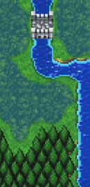
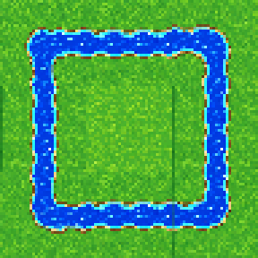
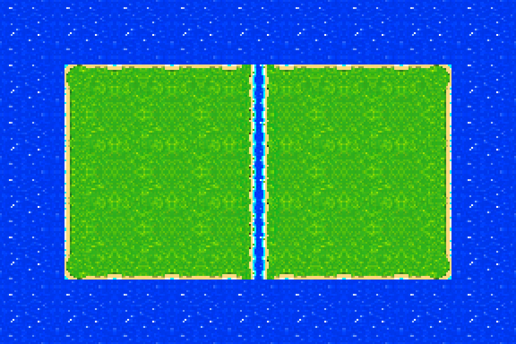
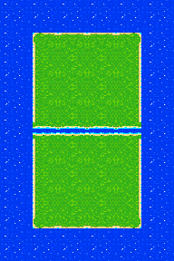
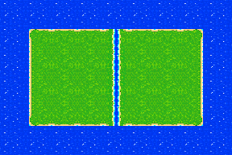
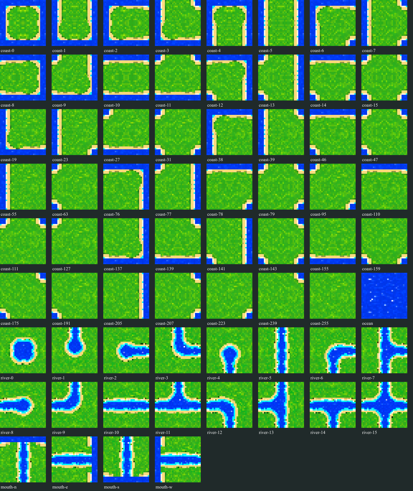

Pixel Remaster — coast

Thin pale shoreline, saturated blue water, green land, naturally irregular contour.
Refreshed from the latest static proof exports and inspected 2026-10-31. This is an asset-sheet and assembly comparison, not game integration or gameplay verification.
Visual findings recorded; runtime/animated behavior not assessed
Pixel Remaster reference crops are associated with Vorxu’s Final Fantasy II Pixel Remaster: Altair & Fynn walkthrough and its Altair-to-Gatrea and Gatrea-to-Fynn gameplay clips. No exact frame timestamps were supplied. Reference crops are comparison material, not production art.
Thin pale shoreline, saturated blue water, green land, naturally irregular contour.

Narrow winding channel, fine banks, small water highlights.

V1 width shifts at joins, especially the lower-right bend-to-straight.

End and cross openings vary; bank edges are not registered to one profile.

Continuous narrow blue core with cream bank and cyan transition at the inspected join.

Orthogonal direction also shows the continuous water and bank profile.

Cyan edge remains visible in native proof; rendered use is unverified.

Rounded bends retain a consistent narrow channel and pale bank in this assembly; no ladder stripes apparent.
Reported native profile: blue core about 5–7 px; banks about 1–2 px per side; outer fringe 0–1 px.

Concave inlet, peninsula, and small island examples are included. Curves are mostly orthogonal with modest rounding.

Grass hues remain compatible across coast and river. Ground texture is brighter/finer than PR.

Inventory view includes the coast set, ocean, river mask cells, and N/S/E/W mixed-mouth examples. Coverage here establishes atlas presence only, not gameplay behavior.
| Check | Finding from supplied proof | Status |
|---|---|---|
| River width and bank registration | Winding bends and both N/S and E/W coast mouths show a consistent narrow blue core and continuous pale banks. Approximate source profile: 5–7 px blue, 1–2 px bank per side, 0–1 px outer fringe. No ladder stripes visible in static proof. Atlas includes all sixteen river mask topologies. | Visual sample passed; gameplay unverified |
| Cyan transition | Cyan edge remains visible between blue water and cream bank in both mouth directions after latest source-mask fix. | Visible in supplied proofs |
| Shore thickness and curves | Thin cream edge remains visible at shown joins and concave examples. Coast outlines remain more orthogonal and less naturally flowing than PR. | Partial visual match |
| Grass palette and texture | Coast and river greens are compatible in mixed assemblies. V2 ground is brighter and more finely patterned than PR’s broader, darker value patches. | Compatible; visible palette delta |
| Water phase | Static atlas/assemblies show no obvious grid seam. Animated phase continuity is not demonstrated. | Not assessed |
| Concave corners | Concave inlet, peninsula, and small island examples appear in the component proof; visual outlines remain grid-based. | Present; shape delta remains |
Proof files are copied into v2-proof/ from the local WorldComponentsV2 review package. Exact RGBA edge agreement alone is not enough to establish organic texture, game-scale readability, or runtime continuity.